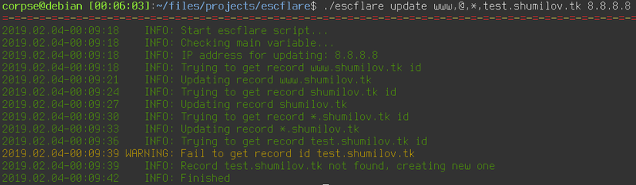

О информационной безопасности и сроке годности

Прогресс
Скорость прогресса непостоянна. Если взять скажем, разницу в образе жизни людей 13го века и образе жизни людей 17го века, то разница конечно же будет, но она ни в какое сравнение не идёт между разницей между 17-м и 19-м веками. И даже эта разница меркнет по сравнению с тем разрывом в прогрессе, который произошёл между 19м веком и настоящим временем. Развитие нелинейно, оно экспоненциально. Чем больше у нас знаний и возможности их применения, тем больше это даёт новых и новых знаний и возможностей их применения.
Наша среда изменяется, появляются новые вещи, новые понятия и новые возможности, о которых и не мечтали фантасты в 19-м веке. Жюль Верн ничего не написал про появление в будущем интернета, но он был бы наверное в шоке, если бы узнал, что сейчас мы можем достать из кармана небольшой прямоугольничек и получить доступ практически ко всем знаниям и всему опыту, накопленному человечеством за всё время. И он скорее всего впал бы в депрессию, если бы узнал, что бОльшая часть человечества пользуется этой возможностью преимущественно для того, чтобы лицезреть изображения котиков или выкладывать изображения себя на всеобщее обозрение.
Мы можем строить сколь угодно много предположений о том, как изменится наша жизнь через сто лет. Мы представляем себе искуственный интеллект, умные дома, сворачиваемые экраны и тому подобное, но это лишь проекция настоящего на временную шкалу. Мы не учитываем нелинейность скорости изменений. На самом деле в этот момент мы наверняка напоминаем писателей фантастов 19-го века, представляющих себе космические корабли на паровой тяге.
Ускорение прогресса в последнее время стало заметным настолько, что инертность сознания человека в возрасте 50ти-60ти лет часто уже не способна адаптироваться к нему в полной мере. Трёхгодовалые дети легко пользуются ютьюбом, а для того, чтобы приучить мою маму не бояться компьютера, у меня ушло несколько лет. СтОит передвинуть пиктограмму приложения в другой угол экрана, как тут же начиналась паника - "всё сломалось, всё стало не так". Отец открывает 10 окон браузера с десятками вкладок в каждом, потому что "теряет" предыдущие окна. То, что нам кажется элементарным, для наших родителей часто тяжело и сложно. И со временем эта разница будет становиться всё заметнее.
Срок годности и безопасность
Отдельно хотелось бы затронуть тему жизненного цикла устройств и безопасности, связанной с этим циклом. Раньше наши инструменты были просты. Жизненный цикл лопаты или молотка определялся в основном их прочностью. Чугунный утюг, разогреваемый на углях, в принципе вполне может выполнять свою функцию сотни и тысячи лет - ломаться в нём нечему. Но затем появились электронные приборы и бытовая техника. Их срок жизни существенно меньше. Электрический утюг, если им регулярно пользоваться, сдохнет раньше своего примитивного собрата, это очевидно. Но он так же имеет ряд неоспоримых преимуществ, поэтому угли у нас уже давно не пользуются популярностью. Так или иначе, прогресс будет идти своим путём, независимо от того, нравится нам это или нет и нам придётся учиться адаптироваться к изменяющейся среде вокруг нас. Можно всё отрицать, но даже если по мнению бабки из известного видео "на...й никому интернет ваш не нужон", он никуда не исчезнет как явление.
Моя мама искренне считает, что кредитные карты - это зло и их использование крайне небезопасно. А между тем количество грабежей и краж на улицах сократилось, потому что нападающий получит вместо "обезличенной наличности" стопку кредиток, которые вскоре окажутся заблокированными. Кредитные карты, видимо, тоже не нужны, но почему-то это плохо сочетается с тем фактом, что некоторые вещи ты просто не можешь купить за наличность. И когда нужно что-то заказать для мамы из Китая, это делаю я, потому что у меня есть карта, которая "не нужна". А вы вообще задумывались, почему на этих картах обозначен срок действия? Что мешает банку обслуживать карту постоянно, чтобы вам не приходилось ездить в банк раз в год/два/три? Зачем им тратить средства на перевыпуск, оплату времени работы менеджеров и прочие накладные расходы? Искуственное ограничение срока действия карты тоже косвенно служит вашей безопасности. Если вы не пользуетесь своей картой или забыли о ней и она несколько лет лежит в ящике вашего стола, то её срок действия выйдет, после чего она перестанет действовать, что не позволит потенциальному злоумышленнику повесить на вас кредит.
В какой-то момент мы приняли для себя факт, заключающися в том, что за некоторыми вещами, устройствами и инструментами нужен уход. И чем устройство сложнее, чем больше оно содержит частей в своей конструкции, тем более комплексного ухода требует. Например, автомобиль - замена масла, фильтров, компрессия, колодки, сальники, пыльники, антифриз - всё это требует контроля, своевременной проверки и технического обслуживания. То есть, у составных частей автомобиля так же есть свой срок жизни, они проходят жизненный цикл начиная с момента производства и заканчивая моментом утилизации.
Что будет, если гарантированный производителем срок жизни например, тормозных шлангов вышел? Повышается риск их выхода из строя. А что произойдёт, если у автомобиля нарушена герметичность тормозных шлангов? Капитан очевидность подсказывает, что в этом случае кто-то может досрочно попытаться решить для себя вопрос о существовании Бога. Для нас является очевидным факт наличия причинно-следственной связи: автомобиль требует внимания, в противном случае мы рискуем своей (и не только) безопасностью. Я вообще заметил, что автомобиль очень хорошо подходит для множества сравнений с чем-либо. Видимо так происходит именно потому, что к автомобилям мы привыкли, они существуют в нашей жизни с момента нашего появления на свет, нам проще выстроить некие параллели, используя привычные для нас понятия. А вот смартфоны появились относительно недавно.
Или другой пример. Что будет с вашим имуществом, если вы уходя на работу, оставите дверь настежь открытой? Вполне возможно, что люди с альтернативными, нежели у вас понятиями о моральных и материальных ценностях, увеличат для себя количество последних и станут несколько счастливее, а вы - наоборот. И это тоже очевидно.
И обратно к информации
А теперь вернёмся к смартфонам. Для меня является большой загадкой, почему многие относятся к ним скорее как к лопатам или утюгам, разогреваемым на углях, нежели как к автомобилям. Складывается впечатление, что понятие о личной информационной безопасности отсутствует у таких людей как класс.
За 2018-й год мне пришло более десятка сообщений от моих знакомых в ВК следующего вида: "Привет! Как дела? Можешь одолжить 10000 до получки?". Фраза, конечно, имеет множество вариаций, сумма тоже меняется, но думаю, каждый из нас так или иначе с подобным сталкивался. На просьбы я всегда отвечаю согласием встретиться лично и поделиться наличными средствами где-нибудь возле отделения местного УВД. Согласившихся ещё не было. Да, подавляющему большинству понятно, что это развод, но я сейчас не о том, на ком работает подобная схема, а о том откуда и почему такие сообщения появляются.
Пишет мне один мой знакомый после того, как от него пришло очередное письмо счастья - мол, не шли мне никаких денег, меня взломали и далее спрашивает меня, что же ему теперь делать? Спрашиваю, какой у него телефон - оказывается, что у него древний HTC с андроидом 4.0.1. А на вопрос какой на этом смартфоне антивирус и давно ли было установлено последнее обновление прошивки, человек изумлённо вопрошает - "А зачем???". Казалось бы, умный/разумный человек. В его жизни случился некий инцидент, он получил наглядный пример того, к каким последствиям может привести халатность. Я его спрашиваю о антивирусе, обновлениях иии... Нет! Никакой связи между этими событиями для него нет. Решительно никакой! Зачем вообще нужен антивирус на телефоне? Что вообще может случиться? Прошивка? Ну он же не айтишник какой, он таким заниматься не будет. Пару кнопок нажать и подождать - это видимо, слишком уж сложно.
На вопрос, регулярно ли он употребляет в пищу прокисшее молоко, гнилые овощи, тухлое мясо и к каким последствиям это может привести его организм, он мне ответа так и не дал. Да, возможно это было несколько грубо, но я знаю, что этот человек может себе позволить взять любой другой новый смартфон, в том числе и флагман. Факт существования некоего срока годности для гаджетов у некоторых людей в голове так и не сформировался. Видимо, на смартфонах для этого должно быть написано "Годен до ..." большими буквами. На помидорах или яблоках такой надписи в принципе нет, но мы тем не менее как-то определяем, что вот этот вот конкретный помидор лучше уже не есть, если у вас нет действующего абонемента в инфекционную больницу.
И ведь таких людей на самом деле много. Сначала они употребляют "просроченное молоко", а потом искренне так изумляются - это что же это такое - диарея??? У меня??? Да не может быыыть!!! Откууууда? И тут же закусывают всё это испорченным помидором.
Более того, испорченные помидоры встречаются и в продаже под видом годных. Сегодня на али в распродаже TMALL видел Samsung Galaxy Tab E 9.6 ценой примерно в 10 тысяч рублей. Мелькнула какая-то мысль о том, что он же вроде уже снят с производства и я начал смотреть фотографии под товаром. На одной из них был сфотографирован экран с данными о системе. Android KitKat 4.4.4, ядро 3.0.какое-то там... Что? KitKat вышел в 2013-м году, линуксовое ядро версии 3.0 зарелизилось в 2011-м. За бортом шёл 2019-й год... Цикл жизни андроид устройств в среднем от полутора до двух с половиной лет... Да, на устройстве муха не сидела, он новый, в коробочке и в плёночках. Да, судя по форумам, на него вполне можно накатить Anrdoid 7.x.x, но в отзывах я вижу огромную портянку из однотипных комментариев вида "Однакласникав поставила, работаит! Всё зашибись, довольна как слон!". Кто из этих людей будет ставить новую прошивку? Подозреваю, что никто - это же только для айтишников, не барское дело. А потом начинаются сопли - у меня увели аккаунт в ВК, деньги мне не высылайте.
В основном, игнорируя факт необходимости заботы о собственной информационной безопасности, люди руководствуются двумя принципами:
• да кому я нафиг сплющился?
• хакеры - это персонажи фантастических фильмов
• я не храню на своём телефоне ничего ценного
Армянское радио отвечает: Сплющился и ещё как!
Во-первых, если у тебя в каждой социальной сети по несколько сотен "друзей", то разошлют сообщения всем. Если клюнет даже один "интеллектуал", то это уже сразу и многократно окупит все затраты на процесс "сплющивания". В то же время таких потенциальных мишеней - тысячи. Как говорится, "десять бабушек - уже рубль".
Во-вторых, никто не будет сидеть как в фильмах про хакеров и молотить по клавиатуре. Кто-то за кусочек биткоина где-нибудь на блекмаркете купит эксплойт, который каким-нибудь (нам не так уж важно, каким) образом получит доступ к твоей учётке или к твоему телефону.
В-третьих, даже если ты не хранишь на своём телефоне ничего ценного, возможно что-то забыто. Если на твоём телефоне обнаружатся какие-нибудь обнажённые фотографии тебя или твоего любимого человека, то это же отличный повод для шантажа! А если не обнаружатся, то и при наличии исключительно приличных фотографий из них легко могут быть сфабрикованы неприличные (привет любителям фотошопа), после чего тебе могут предложить не рассылать их всему контакт листу в обмен на символическую сумму тысяч в пятьдесят рублей например.
В-третьих, если у тебя нашлось 50 тысяч, то может быть найдётся и ещё 50, а фотографии то никуда не делись! Далее логика понятна.
В-четвёртых, можно попытаться продать твой аккаунт тебе же обратно.
Срок годности гаджетов
У многих возникает вопрос - а почему андроид устройства так быстро "протухают" в отличие от тех же компьютеров? На то есть несколько причин. Есть такое понятие, как сегментация андроид версий. Если ты разработчик и хочешь написать новое приложение, ты смотришь на статистику, где в виде круговой диаграммы показано, какой процент пользователей андроид устройств какой версией пользуется. Существует обратная совместимость. То есть, если я хочу написать приложение, которое будет работать на всех устройствах, начиная с Android 6, то я использую один набор версий библиотек для разработки. Если мне нужно захватить владельцев Android 5 - то мне придётся взять более старую версию. Конечно, если я использую версию для пятого андроида, то написанное мною приложение будет автоматически работать и на шестом и на седьмом и так вплоть до самых свежих версий. Так почему бы не взять ещё более древнюю версию библиотек и не написать всё так, чтобы работало практически везде? Казалось бы, это разумное решение, но это не так. Начиная с какой-то версии, например, появляется поддержка сканера отпечатка пальцев на уровне системы. А тебе он нужен. Если у всех подобных приложений будет поддержка сканера, а для твоего приложения придётся вводить пароль руками, то твоим приложением пользоваться никто не будет и смысла его писать вообще нет. В этот момент принимается решение плюнуть на жалкие 5% потенциальных пользователей в пользу более новой версии API. Или, например, в более свежей версии многие вещи стали работать быстрее, энергоэффективнее, оптимальнее, да и процесс разработки упростился в разы, потому что появилась некая библиотека X. То есть, ты можешь сэкономить время на разработку в два раза и начать получать прибыль через три месяца, а не через полгода, пожертвовав ещё тремя процентами пользователей. А за аренду офиса тебе нужно платить уже вчера.
Это свой эволюционный путь и он позволяет андроиду развиваться и развиваться быстро. Конечно, и производителям устройств это выгодно - ты будешь каждые год-два приходить за новым телефоном. Для устройств, которым более трёх лет, если это не флагманы, поддержка закрывается, перестают выходить обновления безопасности и устройство банально становится уязвимым. Пользоваться смартфоном пятилетней давности, на который два-три года не выходили обновления - это примерно то же, что и кушать испортившиеся помидоры, а потом удивляться своему состоянию. Нежелание что-то менять и в чём-то разбираться, что касается вашей информационной безопасности, прикрываясь слоганом "я же не айтишник" подобно отказу от презервативов в период беспорядочных половых связей, с объяснием причины отказа тем, что "вы не медик".
А можно ли продлить жизненный цикл того же андроид сматфона? На самом деле можно, но далеко не для всех устройств. Когда-то существовал проект Cyanogenmod, в рамках которого создавались и поддерживались прошивки с расширенным функционалом для различных андроид устройств. Потом проект распался, а затем на его базе был создан новый под названием LineageOS. Самое замечательное заключается в том, что если смартфон попал в список поддерживаемых устройств этого проекта, то он будет поддерживаться и дальше, пока это будет позволять его вычислительная мощность и пока это будет целесообразно. Но скорее всего вы получите лишних 2-3 года, в течение которых вы сможете и дальше спокойно пользоваться смартфоном. Если ваше устройство уже присутствует в этом списке - считайте, что вам крупно повезло и время его жизни существенно увеличивается. Если же вы выбираете себе новый смартфон, то среди прочих равных явно имеет смысл свериться с указанной выше таблицей и выбрать поддерживаемый. В этом случае вы сможете им пользоваться не два, а например, пять лет.
Для роутеров тоже существуют подобные решения - DDWRT и OpenWRT (новое название LEDE). Есть и другие, но эти два варианта - самые популярные и, соответственно, функциональные. С помощью этих прошивок можно вдохнуть в роутер новую жизнь и наделить его массой функций, которые раньше не были предусмотрены разработчиками. Роутер с OpenWRT и usb портом вполне может превратиться в небольшой домашний сервер. Со списком поддерживаемого оборудования можно ознакомиться здесь.
С компьютерами в этом отношении проще - у подавляющего большинства из них есть архитектура и практически всегда можно поставить хотя бы другую операционную систему, которая поддерживается на текущий момент времени. Но и эти архитектуры не вечны и постепенно меняются, хоть и медленно.
И о других опасностях
Даже если отвлечься от смартфонов и прочих вещей с высоким уровнем сложности, могу привести другой пример. Моя мама купила в магазине удлиннитель, рассчитанный на 0.5 киловатта и включила в него обогреватель на 3 киловатта, после чего позвонила мне и пожаловалась на то, что "розетка почему-то очень сильно греется". В такие моменты мне правда становится страшно за близких мне людей. Казалось бы, человек прожил больше полувека в окружении розеток и бытовых приборов, но у него при этом напрочь отсутствует в сознании такое понятие, как "мощность бытового устройства". Маму абсолютно не смутило, что провод удлиннителя в три раза тоньше, чем провод нагревателя. Не хочу даже думать о том, что могло бы случиться, если бы она не заметила нагрев и оставила всё как есть на ночь.
Почему действительно простые и действительно важные вещи, которые могут сохранить ваше здоровье, имущество, деньги или даже жизнь, не объясняют нам с детства? Подумайте над этим вопросом и берегите своих детей и близких.
Теги: мысли-вслух
Title on this line
The rest of the text file is an html blog post. The process will continue as soon as you exit your editor.
Теги: keep-this-tag-format, tags-are-optional, example
Рубрика "в гостях у калькулятора"

Меня тут в половину пятого ночи посетило любопытство - а сколько знаков и слов в среднем занимает пост на блоге? Я посчитал. Предыдущий пост - это примерно 1600 слов и 18 тысяч знаков. Большой пост - это чуть менее 3000 слов и 30 с лишним тысяч знаков. То есть, сев вечером с желанием что-то написать, мне нужно теперь быть уверенным, что я действительно хочу примерно 20 - 25 тысяч раз нажать на разные кнопочки, пока не лягу спать... Двадцать пять тысяч раз, Карл! И это не учитывая того, что постоянно что-то меняется, добавляется, убирается и исправляется. Да, в попугаях кнопочках посты длиннее. Интересно, а сколько же раз мы нажимаем на бедные кнопочки, скажем, за месяц? За год? Лет за пять?
Теги: мысли-вслух
Скрипт для обновления DNS записей CloudFlare

Пост называется "опять не спится" или "как бесплатно завернуть домен второго уровня на ваш домашний динамический IP адрес". Для чего это вам может быть нужно? Вариантов много. Например, это возможность впоследствии поднять дома какие-нибудь сервисы. Например, создать собственное облако для хранения и расшаривания файлов и смотреть в пути фильмы, лежащие на домашнем жёстком диске или развернуть личный блог, сайт-визитку, сервис умного дома, да хоть устроить станцию онлайн вещания - всё ограничивается вашей фантазией, вариантов использования может найтись масса, когда существует возможность.
Теги: shell, automatization, networking, админское
Про женскую внешность и шанс на знакомство

Под предыдущим постом развернулась дискуссия в контакте на тему внешности и шансов девушки познакомиться. Приведу ниже два комментария, оставленных разными людьми (с сохранением оригинальной пунктуации и орфографии):
Теги: мысли-вслух
Про женскую красоту и дорогую древесину

Моя жена периодически смотрит различные видео, посвящённые маникюру, косметике и прочему девочковому стаффу. Особо не прислушиваюсь, но так или иначе всё это приходится слышать. Иногда это провоцирует появление различных сугубо мужских мыслей на эту тему, которые я и выложу тут. Скажу сразу - да, наверное я чего-то не понимаю (и не против, чтобы мне что-то объяснили), но большинство подобных описанным ниже ситуаций происходит по той причине, что женщинам просто хочется почувствовать себя особенными. Так же я прекрасно понимаю, что мы симметрично можем глупо выглядеть в глазах женщин со своими увлечениями электроникой, машинами и компьютерными играми.
Теги: мысли-вслух
Упороборос или самоперезаписываемые значения в shell скриптах

Периодически, когда мне нужно написать какой-то скрипт на шелле, я сталкиваюсь с типовыми задачами, которые можно решить быстро, просто и в лоб, а можно написать некоторое количество кода, что займёт больше времени, но при этом позволит использовать эту наработку в будущем. Одним словом, на шелле с этим всё обстоит точно так же, как и в других языках. Хотя наверное сочетание слов "библиотека на шелле" звучит достаточно дико и непривычно. Когда -то я уже писал о библиотеке логирования на шелле, которую я сделал много лет назад и достаточно часто ей пользуюсь, с тех пор не было нужды что-то в ней менять.
Вчера я столкнулся с задачей, для которой целая библиотека на гитхабе - это явный перебор, но метод, который можно включать в различные скрипты мне бы совсем не помешал. И вот чем прекрасен собственный блог - это самое подходящее место для того, чтобы оставить заметочку с небольшим куском кода, который потом при необходимости оттуда можно быстро скопировать. Как это нередко бывает при попытке написать что-то на шелле, сам код оказался куда проще, компактнее и универсальнее, чем изначально казалось, должен был быть.
Теги: shell
Про фильтры и информационный шум

Мой хороший друг написал статью о твиттере, социальных сетях и почте. В статье помимо прочего было замечено следующее:
Соцсети, например, создают очень сильный информационный шум. И если не уметь его фильтровать и отсеивать, то пользы не будет никакой. Будут усталые глаза, затекшая шея и ощущение, что ты сделал что-то полезное (на самом деле нет). Самый эффективный и простой инструмент доставки полезной информации — это электронные письма. И пока ничего более удобного не придумали.
Теги: мысли-вслух
Про внезапный переезд на GitHub Pages
Сегодня ночью случилось сразу несколько событий. Яндекс мигрировал мой домен в Яндекс.Коннект, у меня дома отвалился интернет, а затем выключили и электропитание. Нередкий случай проявления заботы со стороны нашего ТСЖ - нечего ночами сидеть в сети, ложись спать давай, родной. Вот, мы и свет уже тебе погасили. Логичным продолжением было бы отключение воды, отопления, газа и, чего уж там, сразу воздуха, но этого, что меня радует, не последовало.
Через какое-то время мой хороший друг написал в телеграм - мол, блог твой недоступен, на что ласково был обозван "мониторингом мониторинговичем" и примерно в этот же миг снизошло на меня озарение свыше - включили свет и увидел я мир вокруг. И понял я, что это хорошо. Интернет тоже не заставил себя ждать, а вот блог так и остался недоступен. Раньше я бы плюнул на всё и лёг спать, но с мыслью о 52х постах, которые кто-то читает, кто-то даже комментирует, а кому-то, о чудо, и вовсе нравится, я уже уснуть спокойно не мог. Надо было чинить.
Про математический обман

Недавно моя хорошая подруга написала вот этот пост, в котором говорится о том, что многие люди не хотят считать, в том числе даже и свои средства, прикрываясь тем, что это для них сложно и вообще, они гуманитарии. Хотел бы продолжить данную тему и привести другие примеры.
Наш мозг обмануть несложно. Мозг ленив, он вообще не любит лишнюю работу и поэтому там, где считает это возможным, идёт по пути наименьшего сопротивления, чем и пользуются те же кредитные агенты и маркетологи. Пожалуй, самый наипримитивнейший способ, которым пытаются обмануть наш мозг - это ценники в магазинах. Все эти "9999" рублей, которые в представлении маркетологов на подсознательном уровне должны якобы сформировать представление о том, что цена товара не десять тысяч, а девять с чем-то. А это "что-то" видимо, следуя той же логике, должно восприниматься как нечто несущественное. Да, это самый примитивный пример и многие наверное думали об этом в ключе: "Да кто вообще на это клюёт? Это же очевидно!". Возможно, некоторым это казалось смешным в своей наивности.
Да, мы можем тихонько посмеяться над убогими, на ком срабатывают и такие нехитрые методы, мы-то сразу при подсчёте покупок округляем цены в бОльшую сторону, не правда ли? Но стОит сделать маааленький шажок в сторону, стоит чуть-чуть усложнить задачку, как сразу же мы клюём на удочку, стОит нам подсунуть нужную цифру. И жертвой вполне может стать человек, не считающий, что у него гуманитарный склад ума. Не смотря на то, что для успешного обхода большинства граблей хватит общего образования в рамках пяти классов школы. Но сначала про чуть более сложное, но тем не менее, очевидное на бытовом уровне вымогательство.
Теги: мысли-вслух, жизненное